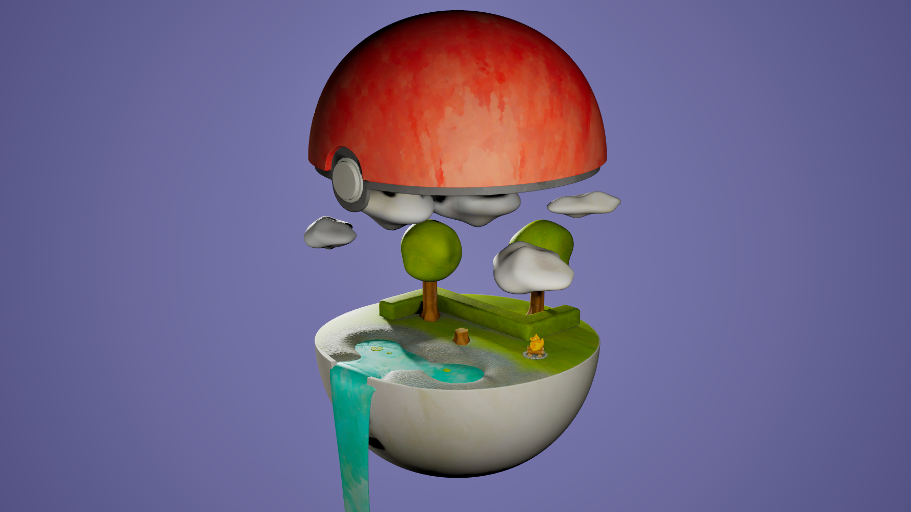
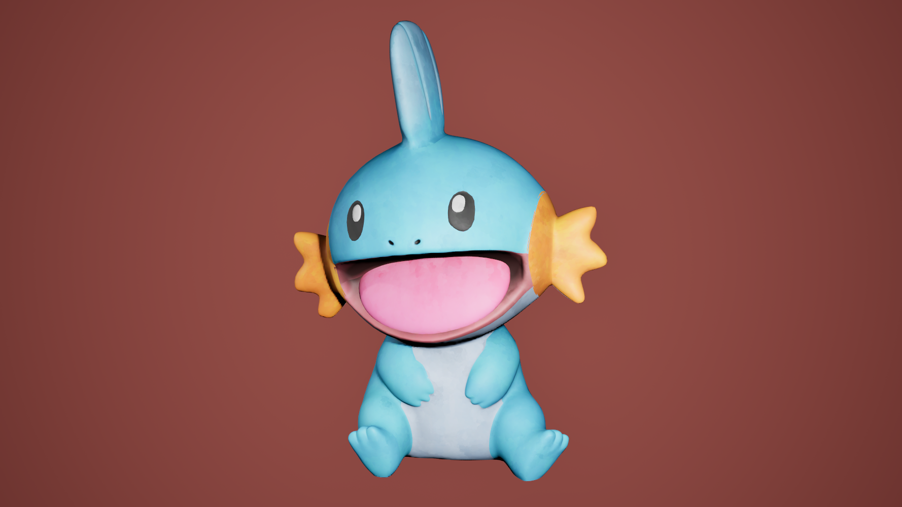
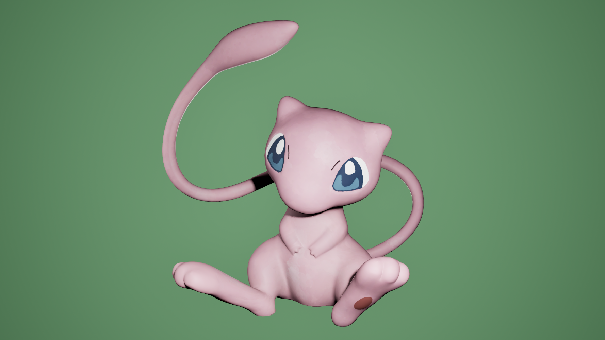
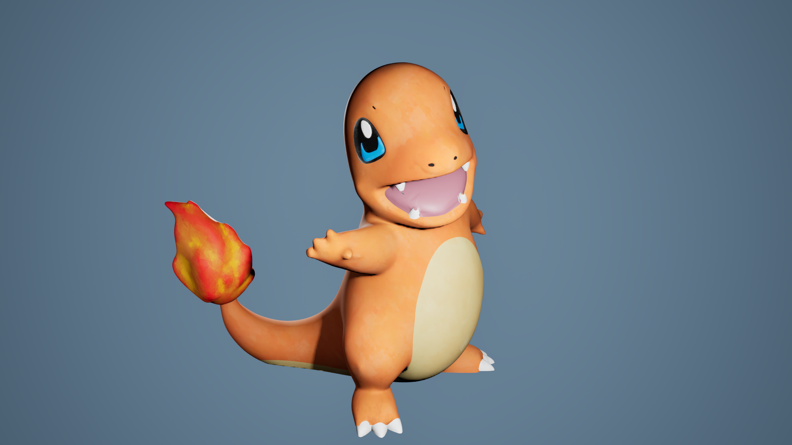
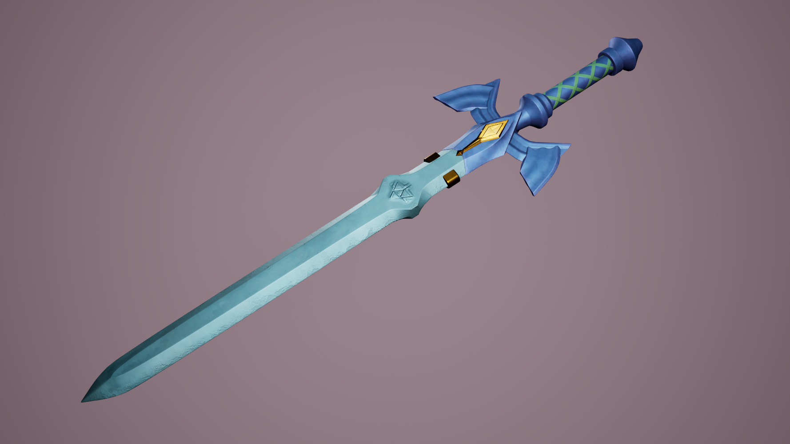
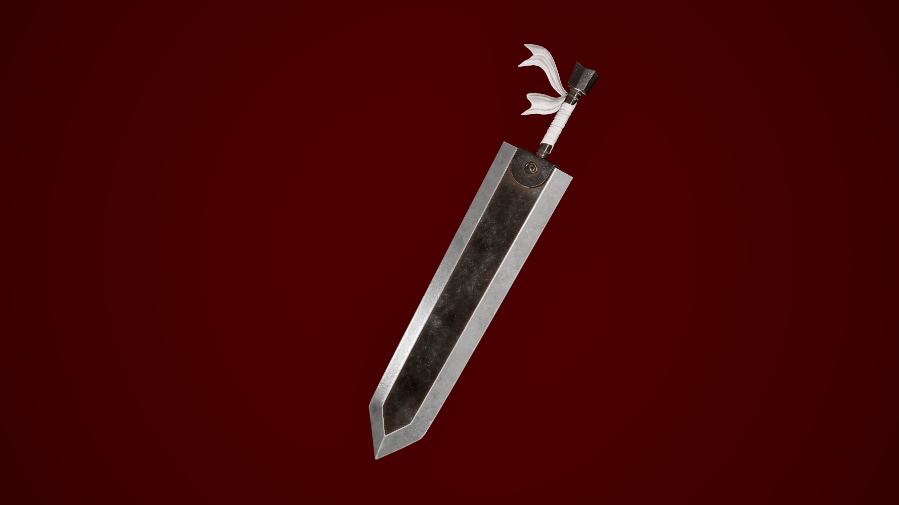

3D Assets
I wanted to explore 3D modeling and its different stages in order to diversify my skills. To achieve this, I created a variety of different models, each allowing me to explore and learn new techniques.
I first created several Pokémon to practice creature modeling and techniques related to organic shapes. I then designed a Poké Ball containing a miniature scene showcasing these models, allowing me to explore composition, texturing, and environment creation.




3D Scene
Different Styles
I also wanted to create swords to experiment with different styles and techniques, both in modeling and texturing. This allowed me to explore new approaches to shape design and surface details while expanding my overall 3D modeling skills.


Technologies
- Maya 3D
- Substance Painter
- Unreal Engine 5
Conclusion
All of these 3D projects allowed me to learn a lot about different modeling and texturing techniques, as well as the overall 3D creation process. I really enjoyed stepping outside of my comfort zone and learning new things through each project. This experience allowed me to better understand the challenges and possibilities of 3D creation.